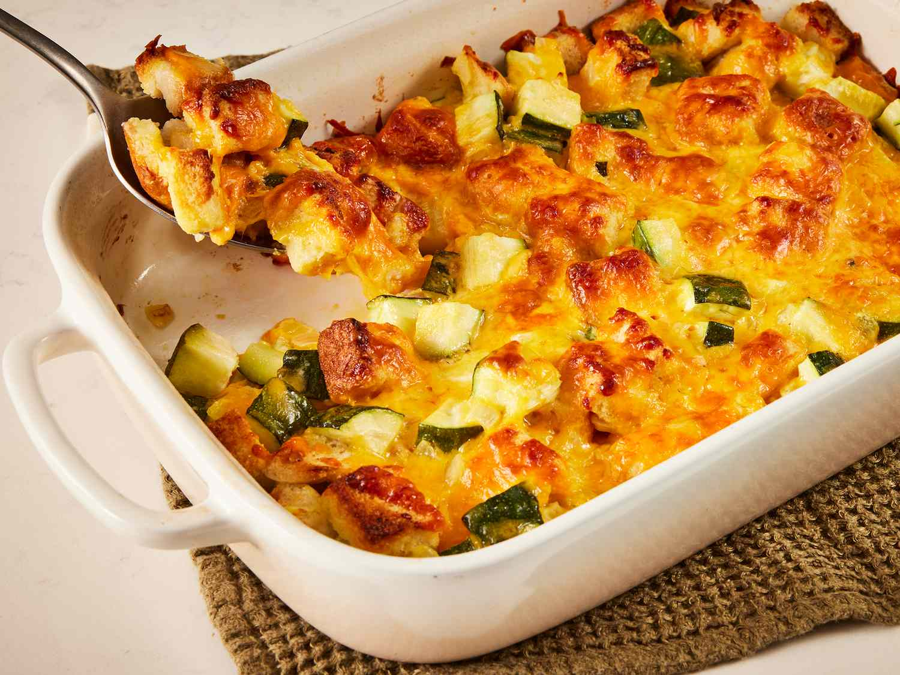

Zucchini Casserole

Description
This cheesy zucchini casserole is the ultimate comfort dish, bursting with creamy,
melty goodness and packed with tender zucchini in every bite. It’s a perfect way to use
up a garden bounty, transforming simple ingredients into a rich, savory bake that’s sure to please
the perfect balance between hearty and wholesome. Whether served as a cozy side or a satisfying main,
it’s a warm, welcoming dish you’ll want to make again and again.
Ingredients
- 4 slices of bread, cubed
- 1/4 cup melted butter
- 2 cups cubed zucchini
- 1 large onion, finely chopped
- 1 large egg, beaten
- 1 teaspoon garlic salt or to taste
- 2 cups shredded Cheddar cheese
Directions
- Gather all ingredients. Preheat the oven to 350 degrees F (175 degrees C).
- Place bread cubes in a medium bowl and pour melted butter over top. Add zucchini, onion, egg and garlic salt; mix well
- Transfer the mixture into a 9x13 inch baking dish and top with cheese.
- Cover and bake in the preheated oven for 30 minutes. Uncover the dish and bake for another 30 minutes.